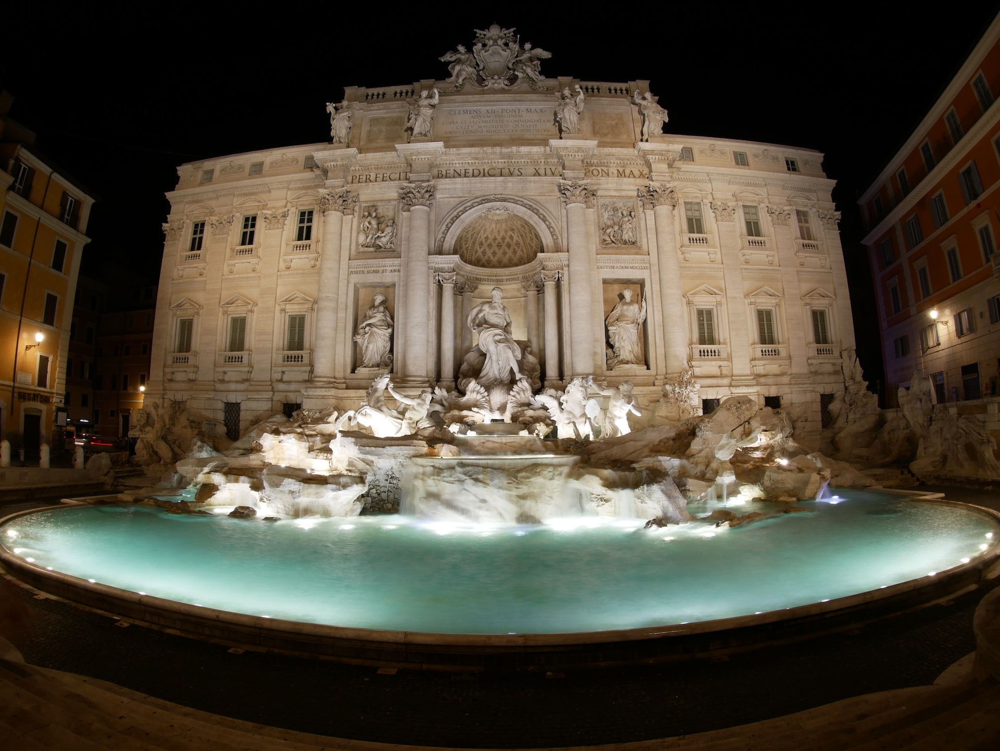
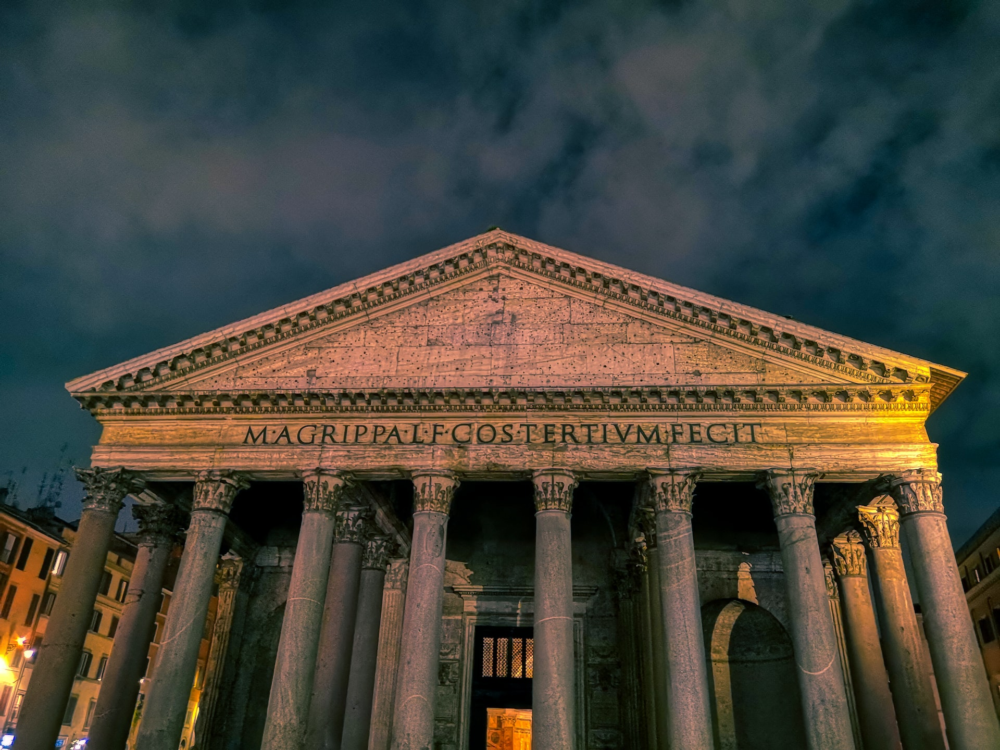

Esenciales de Roma por 3 Días.
¡Te Cuento todas las cosas que ver en Roma en 3 días! También los lugares donde comer y todas las reservas que es conveniente hacer con antelación.
Con un planning y ruta diaria con mapas de cada día para que te resulte más fácil de planificar.
Si dispones de tres días en Roma completos podrás recorrer los lugares más imprescindibles de la ciudad, ¡sin prisa pero sin pausa!
¡Allá vamos con todas las cosas que ver en Roma en tres días!
Dia 1: Plaza de España, Fontana di Trevi, Panteon de Agripa, Piazza Navona, Museos Capitolinos y Monumento a Emanuele II
PUNTOS DE INTERÉS:
- Plaza de España
- Fontana di Trevi
- Panteón de Agripa
- Piazza Navona
- Museos Capitolinos
- Monumento a Vittorio Emanuele II y Terraza de las Cuadrigas
Te recomiendo los alojamientos Viminale View y el Hotel Roma Vaticano, para poder recorrer Roma andando sin prácticamente necesidad de transporte público. ¡Yo he alojado en ambos y los recomiendo totalmente!
Una buena manera de comenzar este viaje a Roma en tres días es haciendo un free tour por el centro de la ciudad o recorrerlo por tu cuenta.
Comenzamos en uno de los puntos más famosos de Roma, las famosas escaleras de la Plaza de España.
Saliendo por la Via Condotti y continuando por la calle de tiendas Via del Corso se llega a uno de los puntos más importantes e imprescindibles de este viaje a Roma en 3 días, ¡la Fontana di Trevi!
Esta fuente es inconfundible, por mucho que la hayas visto en cientos de fotos es alucinante llegar a ella por los pasadizos secretos de las calles.
No te imaginas una fuente de esa magnitud escondida entre las callejuelas de Roma, ¡impresionante!
Por supuesto, no te olvides de tirar una moneda a la fuente de espaldas para volver a Roma.
El Panteón de Agripa es otra de las paradas importantes, la entrada es gratuita y la plaza en la que se encuentra también es una parada imprescindible.
Muy cerca se encuentra la Heladeria Giolitti, una de las heladerías más famosas de Roma. ¡Nadie hace los helados como los italianos!
A estas alturas seguro que te has quedado pasmado de las calles de esta zona de Roma, ¡una maravilla!
A pocos minutos andando desde el Panteón de Agripa se encuentra la Piazza Navona, otra majestuosa plaza romana, para mi de las más bonitas de la ciudad.
Por esta zona hay un montón de restaurantes, por ejemplo puedes comer en Saltimbocca Ristorante.
Más abajo te dejo algunas otras recomendaciones de restaurantes en Roma, la comida italiana es una de mis preferidas, ¡deliciosa!
La tarde la puedes dedicar a visitar los Museos Capitolinos por tu cuenta aunque es recomendable hacerlo en una visita guiada para no perderte nigun detalle.
Aquí se encuentra la famosa escultura de la loba amamantando a Rómulo y Remo.

Por cierto, justo al lado de los Museos Capitolinos están las mejores vistas (a mi parecer) del Foro Romano, tiene la ubicación exacta en el mapa de abajo.

Y qué mejor que terminar este primer día con unas vistas excelentes a toda la ciudad desde la Terrazza delle Quadrighe o Terraza de las Cuadrigas, ¡uno de los lugares que tienes que ver en Roma en tres días!
Dia 2: Coliseo, Arco de Constantino, Palatino, Foro Romano, Circo Maximo, Bocca della Verita y Barrio de Trastevere.
Posibles reservas para el día de hoy:
- Free tour por Roma. Reservar aquí.
- Visita guiada por el Panteón de Agripa. Reservar aquí.
- Visita guiada por los Museos Capitolinos. Reservar aquí.
- Entrada a los Museos Capitolinos por libre. Reservar aquí.
- Terraza de las Cuadrigas. Reservar aquí.
Si no quieres complicarte la vida llegando a Roma, puedes contratar los traslados desde el aeropuerto hasta tu hotel, ¡sin estrés! Yo Contrate uno en mi último viaje y fue todo un acierto con las 3B.
PUNTOS DE INTERÉS:
- Coliseo
- Arco de Constantino
- Palatino
- Foro Romano
- Circo Máximo
- Bocca della Verità
- Barrio de Trastevere
Comenzamos este segundo día del planning de viaje a Roma en tres días en el icono principal de la ciudad, ¡el Coliseo!

Considerado una de las 7 maravillas del mundo es posiblemente la obra más conocida de Roma por todo el mundo.
Te sugiero visitarlo a primera hora de la mañana para evitar multitudes en las colas, y también hacerlo con guía, de esta forma resulta mucho más interesante la visita.
Formas de visitar el Coliseo de Roma:
- Comprar la entrada online, cobran 2€ de gastos de gestión pero es la mejor forma de ver el Coliseo por libre el día
y hora que queremos. ¡Ojo! Hay muchas webs que venden entradas para el Coliseo, esta es la web oficial del Coliseo. - Contratar una visita guiada por el Coliseo, Foro y Palatino.
- Contratar una visita guiada como la anterior pero que además incluye los Museos Vaticanos, la Capilla Sixtina
y la Basílica de San Pedro, toda la info aquí. - Con la tarjeta turística Omnia Vatican & Rome Card también tendrás el acceso sin colas.
Si decides visitarlo sin guía, te sugiero al menos pagar por un audio-guía en la entrada del Coliseo.
La entrada para el Coliseo incluye también la entrada al Foro Romano y al Palatino, puedes acceder a ellos durante las siguientes 24 horas.
El primer domingo del mes la entrada al Coliseo es gratuita.
Visitar el Coliseo, Foro Romano y Palatino te llevará toda la mañana ¡o más! Dependiendo de si lo haces con guía y el tiempo que pases en cada lugar.
Para comer puedes hacerlo en este restaurante con vistazas al Coliseo o en alguno de los muchos restaurantes que hay por los alrededores.
La tarde la puedes dedicar a recorrer el Barrio de Trastevere no sin antes pasar por la Bocca della Verità.

La entrada a la Bocca della Verità (o Boca de la Verdad) es gratuita y la leyenda dice que quien miente pierde la mano al introducirla en la boca.
También aparece en la peli de "Vacaciones en Roma" de Audrey Hepburn.
Despues está El Barrio de Trastevere uno de los más conocidos de Roma por sus bares y restaurantes, sobre todo al caer la tarde, y por tener un ambiente algo bohemio.

El restaurante Cambio Trastevere también es recomentable para desayunar, brunch o incluso para cenar.
Y en este barrio que tanto me gusta termina nuestro segundo día de viaje a Roma en tres días.
Más abajo tienes un montón de recomendaciones de restaurantes en Trastevere para cenar.
Reservas para el día de hoy:
Reservar la entrada al Coliseo de alguna de las formas que te comentaba más arriba.
Te sugieros probar el tiramisú en Tiramisú Trastevere, lo hacen al momento ¡y está buenísimo!
Aquí tienes más ideas de tours guiados, entradas y excursiones en Roma.
Dia 3: Vaticano, Castillo de SantAngelo y Piazza del Popolo.
PUNTOS DE INTERÉS:
- Museos Vaticanos
- Capilla Sixtina
- Basílica de San Pedro
- Castillo de Sant'Angelo
- Plaza del Pópolo.
¡No es un viaje completo a Roma sin una visita al Vaticano!

Para este planning de Roma en tres días lo he dejado para el último día pero se pueden intercambiar los días en el orden que más te guste, según tus preferencias.
Te sugieros comenzar el día en los Museos Vaticanos para evitar las colas que se forman más tarde.
La entrada a la Basílica de San Pedro es gratuita, pero si quieres visitar los Museos Vaticanos, la Capilla Sixtina o subir a la Cúpula de San Pedro, sí que hay que comprar una entrada.
Formas de visitar los Museos Vaticanos y la Capilla Sixtina:
- Visitar los Museos Vaticanos y la Capilla Sixtina por libre. Esta es la web oficial del Vaticano.
- Hacer una visita guiada por los Museos Vaticanos y la Capilla Sixtina. ¡El más recomendado!
- Hacer un tour con primer acceso a la Capilla Sixtina + Museos Vaticanos. Yo hice este en mi último viaje a Roma pero a pesar de ser el "primer acceso" había mucha gente.
Si quieres subir a lo alto de la cúpula de San Pedro también tienes que comprar una entrada y subir unos cuántos escalones.
En total son 551 escalones divididos en dos alturas, a la primera se puede acceder con ascensor y te ahorras 231 escalones.
Para la segunda altura no hay ascensor y sí o sí tienes que subir 320 escalones.
Recorrer los Museos Vaticanos, la Capilla Sixtina y la Basílica de San Pedro también te llevará toda la mañana.
Te sugieros comer en el barrio de Prati tiene muchísimos restaurantes populares y cafeterías, este barrio fue uno de los grandes descubrimientos en mi último viaje a Roma.
Estuve alojado en el Hotel Roma Vaticano ¡y quedé enamorado del barrio! Con un ambiente mucho más local y repleto de restaurantes y cafeterías bonitas.
Te sugieros Chopstick Prati, un japonés genial, ¡y la comida estaba buenísima!
Y si te apetece algo más típico, el restaurante 3 Quarti me encantó, comida italiana muy buena y genial de precio.
Para la tarde del último día de este viaje a Roma en 3 días todavía quedan dos puntos importantes que no te lo puedes perder.

En primer lugar, el Castillo de Sant'Angelo, otro de los iconos de Roma, ¡seguro que lo has visto en cientos de fotos!
Este lugar tiene mucha historia y Te sugiero recorrerlo con guía para conocer mejor todas las curiosidades, pero también se puede visitar por libre.
Y para terminar, una visita a la Plaza del Pópolo, uno de los lugares imprescindibles que ver en Roma en 3 días.
Es otra de las plazas más importantes de la ciudad, en el medio hay un obelisco egipcio dedicado a Ramsés II de 24 metros.

Desde la Terrazza del Pincio (que se encuentra justo allí) hay unas vistas estupendas al caer la tarde, ¡no te lo pierdas!
Reservas para el día de hoy:
- Reservar la entrada a los Museos Vaticanos y Capilla Sixtina de alguna de las formas que comenté más arriba.
- Visita guiada por el Castillo de Sant'Angelo.
Más cosas que ver en Roma en 3 días:
- Hacer una excursión a las Catacumbas y la Via Appia, una de las calzadas más importantes de la antigua Roma. Puedes hacerlo por tu cuenta o contratando una excursión con guía en español.
- Visitar el museo interactivo Welcome to Rome, yo estuve en mi último viaje y es interesante para saber más sobre la historia de Roma de una forma muy amena.
- Parque Villa Borghese, un enorme parque público repleto de zonas ajardinadas, fuentes y estanques.
- Campo di Fiori, una animada plaza de Roma donde montan de lunes a sábado un colorido y pintoresco mercado local.
- Basilica de Santa Maria Maggiore, la mandó construir el Papa Liberio y es la mayor de las 26 iglesias de Roma dedicadas a la Virgen María.
- Termas de Caracalla, fueron las segundas termas más grandes de la ciudad de Roma y es una de las excursiones más populares desde Roma.
- Moisés de Miguel Ánge, se encuentra en la Basílica de San Pietro in Vincoli y es una enorme escultura de mármol de más de dos metros.
- Mercado Central de Roma, se encuentra en la estación de Termini y es un lugar estupendo para comer en alguno de sus restaurantes.
- Vicus Caprarius - La Città dell'Acqua, restos arqueológicos junto a la Fontana di Trevi.
Dónde alojarse tres días en Roma
Te sugieros consultar las mejores zonas donde alojarse en Roma para disfrutar de un viaje estupendo.
En mi ultimo viaje de tres días a Roma me alojé en el hotel Roma Vaticano ¡y quedé maravillado del barrio! Con un ambiente mucho más local y repleto de restaurantes y cafeterías bonitas.
Este barrio fue uno de los grandes descubrimientos en mi último viaje a Roma, en el siguiente apartado tienes un listado de restaurantes y muchos de ellos se encuentran en este barrio.
También conocemos el Viminale View, un hotel super bonito en el que estuve alojado en un viaje anterior.
He estado un montón de veces en Roma y me conozcos unos cuántos hoteles, pero si tengo que recomendar, ¡me quedo con estos dos!
Restaurantes recomendados en Roma
Tenemos una larga lista de restaurantes que me gustan especialmente, muchos se encuentran en el barrio de Prati porque fue donde se encontraba mi alojamiento.
¡Hay de todo! Restaurantes de comida típica, japoneses, poke...
Abajo tienes todo el listado y aquí te dejo un mapa para que puedas ver la ubicación de todos los restaurantes de un solo vistazo.
Restaurantes en Roma:
- Coromandel, genial para hacer un brunch cerca de la plaza Navona, hay que reservar mesa.
- Casa & Bottega, muy cerca del anterior y también genial para desayunar o tomar un brunch.
- Mimì e Cocò, comida italiana rica, un poco turístico.
- Cambio Trastevere, local muy bakan para hacer un brunch, comer o cenar en el barrio de Trastevere.
- Royal Art Cafè Roma, Tiene una terraza muy bella con vistas al Coliseo, Te sugiero reservar mesa.
- Tiramisú Trastevere, para probar el tiramisú, lo hacen al momento delante de ti, ¡buenísimo!
- Two Sizes, también una opción estupenda para probar el tiramisú.
- Heladeria Giolitti, cerca del Panteón de Agripa, posiblemente la heladería más famosa de Roma.
- Terrazza Les Étoiles Roma, terraza para tomar algo o comer con vistas al Vaticano.
- Mercado Central, junto a la estación central de Roma tiene un gran oferta de comidas y productos locales.
- Santo Trastevere, otro restaurante muy bueno en Trastevere.
- Ivo a Trastevere, pizza y pasta genial de Precio.
- Baby bao, Dim Sum & Bao Bar en Trastevere.
- Rifugio Romano, trattoria genial de precio.
- Saltimbocca ristorante, cerca de Piazza Navona.
- Pasta e Vino Osteria en Trastevere.
Barrio de Prati:
- 3 Quarti Restaurant, comida italiana muy buena y genial de precio, uno de nuestros restaurantes favoritos de Roma. ¡Nada turístico!
- Chopstick Prati, un japonés muy bueno con comida buenísima.
- Bao Bao, restaurante de dumplings muy rico, puedes comer ahí o pedir para llevar.
- Sushi Poke Love, restaurante de poke, yo lo pedi para llevar, pero también te lo puedes tomar allí.
- Il Gianfornaio, todo el día están preparando comida deliciosa, es ideal para desayunar, tomar un café o comer algo rápido.
- Bakery M, ademas de preparar buenos cafés puedes comer y por la tarde animan la cafetería con música.
Consejos para tu viaje a Roma:
TARJETA OMNIA VATICAN & ROME CARD:Incluye transporte público ilimitado durante 3 días en Roma, acceso gratuito a los principales museos y lugares de interés, y otros descuentos. Más info aquí.
COMO LLEGAR DESDE EL AEROPUERTO A ROMA: El aeropuerto de Fiumicino se encuentra a unos 30 kilómetros de Roma, hay varias formas de llegar a la ciudad:
- Autobús: Terra Visión conecta el aeropuerto con la estación Termini de Roma, tarda unos 45 minutos en llegar y cuesta unos 6€ el trayecto.
- Tren: Hay dos trenes que hacen el trayecto Roma-Fiumicino, uno regional que tarda una hora pero es más económico, y otro express que hace el trayecto en media hora.
- Traslados: Contratando los traslados desde el aeropuerto a tu hotel, esta es la opción más cómoda y la que generalmente yo utilicé en mi último viaje a Roma.
SEGURO DE VIAJE: Te sugiero llevar un seguro de viaje que cubra cualquier contratiempo que pueda ocurrir, además para un viaje de tres días a Roma es muy asequible, más aún con el 5% de descuento que tenéis desde nuestro enlace.
Cómo moverse por Roma
Lo mejor es moverse por Roma en metro, autobús o tranvía, dependiendo del trayecto.
Los taxis son bastante caros y es una ciudad con bastantes atascos, no lo recomiendo.
Puedes comprar un bono turístico de tres días en Roma que te sirve para todos los medios de transporte.
Finalmente aqui encontraras un mapa con todas las cosas que ver y hacer en 3 días en Roma, restaurantes recomendados y alojamientos donde pasar unos días inolvidables.
¡Y hasta aquí el post de Roma en tres días!
¿Añadirías alguna cosa más que ver en Roma en tres días? Si tienes cualquier duda, ¡te espero en los comentarios!

5 Comentarios
A.Dadario
Me encanta la historia de Roma.
K.Reeves
Muchos guerreros notables pasaron por el coliseo Romano para entrener a la gente.
O.Wilde
Nadie podría decir no a una cena romantica cerca del coliseo.
Dejame Un Comentario